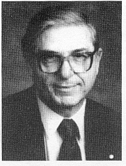

James Likoudis, the author of the many articles on his Website, has received, in 2020, an Honorary Doctorate from Detroit's Sacred Heart Major Seminary for his work on Catholic apologetics, catechetics, ecumenism, and Catholic-Eastern Orthodox relations.
CONGRATULATIONS Doctor Likoudis for a well deserved Award.

Dr. James Likoudis is a nationally known writer and lecturer on religious education, sex education, and family life. He is also regarded as a leading authority on Ecumenism, Liturgy, the Papacy, Catechetics and the role of the Laity in the Church. His expertise and erudition in Catholic Apologetics, Papal and Conciliar history and a vast knowledge of Orthodoxy issues, make Dr. Likoudis a sought-after speaker. He earned his B.A. studying history and philosophy at the University of Buffalo, holds a masters’ degree in education from Elmira College, and is a former College Instructor in History and Government with over 20 years of teaching experience in public and private education, including the Franciscan minor seminary of St John's Atonement and Rosary Hill College. He has also lectured at Franciscan University of Steubenville.
Dr. Likoudis converted to the Catholic Church in 1952 from Eastern Orthodoxy and has since devoted a great deal of his efforts to foster the reunion of the Eastern Orthodox churches with the Catholic Church. He is the author of several books dealing with the ecclesiology of the Eastern Orthodox churches:
- Ending the Byzantine Greek Schism (2nd revised edition, 1992)
- The Divine Primacy of the Bishop of Rome and Modern Eastern Orthodoxy: Letters to a Greek Orthodox on the Unity of the Church (A NEW re-published revised and expanded 3rd edition, Oct. 2023)
- Eastern Orthodoxy And The See Of Peter: A Journey Toward Full Communion
| This "trilogy" treats in detail all aspects of Eastern Orthodoxy's ecclesiology, objections, allegations and misconceptions. |
These books are the culmination of close to 50 years of assiduous and relentless study on this subject.
In the first book "Ending the Byzantine Greek Schism" he deals with historical and theological issues raised by Eastern Orthodoxy, witnesses to the author's longstanding preoccupation with ecumenism and his desire for the full reconcilation of the separated Byzantine Greco-Slav church with the Chair of Peter.
In the second work on ecumenism and Orthodoxy: "The Divine Primacy of the Bishop of Rome and Modern Eastern Orthodoxy: Letters to a Greek Orthodox on the Unity of the Church" he gives a powerful refutation of objections to the Papacy made by Protestants and Eastern Orthodox and an impressive demonstration of the evidence for the universal jurisdiction of the Pope over the entire Church, both East and West during the first Millennium of the Church's history.
In regard to the third work completing a trilogy of significant and important works dealing with Eastern Orthodoxy's issues is: "Eastern Orthodoxy And The See Of Peter: A Journey Toward Full Communion", of which the first 3 Chapters give an account of and the reasons for Mr. Likoudis' own reconciliation with the Catholic Church from Greek Orthodoxy while a student at the University. Other Chapters deal with Reflections on the History of the Byzantine Schism, and contemporary ecumenical issues.
As a convert from Greek Orthodoxy, his major scholarly contribution has been on the ecumenical front, defending Papal Primacy and authority in response to Eastern Orthodox objections. His most recent book is "Heralds of a Catholic Russia: Twelve Spiritual Pilgrims from Byzantium to Rome." where he details the intellectual journey of twelve prominent Russian individuals from Orthodoxy to the Catholic Faith.
A prolific writer, he helped thousands of ordinary Catholics understand the changes in society and liturgy, and on this point Dr. Likoudis co-authored "The Pope, the Council and the Mass" (Christopher Publishing House, rev. ed. by Emmaus Road Publishing - see www.emmausroad.org) with Kenneth D. Whitehead - which has been hailed as an outstanding defense of Pope Paul VI's "Ordo Missae" and the genuine liturgical reforms envisaged by the Second Vatican Council. L'Osservatore Romano noted: "This book has been sorely needed for well over a decade" (11/2/81). In addition, he has enjoyed the privilege of co-authoring books with world-renowned theologian Dietrich Von Hildebrand and Eternal Life founder Fr. John Hardon S.J. and has hosted conferences with EWTN founder Mother Angelica and Professor of Systematic Theology at Sacred Heart Major Seminary, Dr. Robert Fastiggi, among others.
Dr. Likoudis, served as president of Catholics United for the Faith (CUF), and as such, has traveled and lectured extensively throughout the world, defending "Humanae Vitae", Catholic sexual morality, and the authority of the Magisterium, most often in the U.S., Canada, England, Australia, New Zealand, India, and Estonia to parents’ groups, CUF Chapters, and other Catholic associations on a wide range of issues affecting clergy and laity alike. He has published many of these works in various books, as well as written extensively for various religious papers and magazines - most notably, The Wanderer, - which incidentally, had as editor from 1990 to 2014, his late son Mr. Paul Likoudis - another prolific writer and church historian, most recognized for his role in uncovering the sexual abuse scandal in the church, prior to its exposé in The Boston Globe in 2002. Paul's findings were published in his book "Amchurch comes out" after first being published in-part in The Wanderer itself. Church Militant (Click Here for Testimonial) and Life-Site News (Click Here for Testimonial) offer a couple of beautiful tributes in his memory.
Dr. James Likoudis is now President Emeritus of the lay apostolate - Catholics United for the Faith(CUF), headquartered in Steubenville, Ohio; founded in 1968 to promote the Truths and Doctrines of the Church and to turn back the tide of confusion that followed in the wake of Vatican II. Additionally, Mr. Likoudis was the co-founder and leader of Credo of Buffalo, a Chapter of Catholics United for the Faith, as well as being a prime mover behind John Hardon’s pro-life organization, "Eternal Life", and its annual Church Teaches Forum, recently commencing for Raymond Leo Cardinal Burke at its 2019 meeting.
In 2002 Dr. Likoudis was the recipient of the Blessed (Now Saint) "Frederic Ozanam Award for Catholic Social Action" from the "Society of Catholic Social Scientists (SCSS)". Also, in view of his tireless promotion of sound doctrine, morals, liturgy and ecumenism, since his reception into the Church in 1952, Professor Likoudis was awarded, in December 2020, an "Honorary Doctorate of Divinity" by "Sacred Heart Major Seminary" in Detroit for his life's work as a Catholic educator. However, due to the Covid pandemic, no public awards ceremony could be held and he was awarded his degree in absentia. The happy news is that we may now address him as DOCTOR James Likoudis.
A devout Catholic, the father of six children [including deceased Wanderer columnist Paul Likoudis], and grandfather of 35, Dr. James Likoudis and his gracious wife Ruth, presently reside with their daughter Therese in the beautiful city of Ann Arbor, Michigan.
N.B.: The website manager is grateful to Mr. Andrew Likoudis, grandson of Dr. Likoudis, for his involvement and input in the completion of this particular website' page. His personal knowledge was crucial in obtaining many of the biographical data on his grandfather. All of the following listings were compiled, very carefully, by him. Thank you Andrew.
ACADEMICS
Worth noting:
- In 1977 Dr. Likoudis translated Renee Casin's "St. Thomas Aquinas, Orthodoxy, and Neo-Modernism in the Church" from French to English.
- Published "St Therese, Doctor of the Church?" - prior to her being formally declared a doctor of the church.
- He sits on Aleteia's board of experts and has a page dedicated to him on Catholic Answers.
- He's been interviewed on EWTN's Journey Home Network (Watch the episode here), and has also appeared on the Mother Angelica show, the Geraldo Rivera show, the Phil Donahue Show and various radio stations including Ave Mario Radio and Catholic Answers Live.
- He has had several video-taped phone interviews by "Reason and Theology.com", normally posted on YouTube. The latest one of these: "The Donation of Constantine"; and "On Orthodoxy and the Papacy".
Educational Background
- M.S., Elmira College (1972), Education
- B.A., University of Buffalo (1951), Philosophy
Professional Experience
- 1971 to 1994 Worked at CUF, retiring as President Emeritus
- 1968 to 1970 Taught Western Civilization and History of India at Rosary Hill College
- 1961 to 1968 Taught History & Government at St. John’s Atonement Franciscan Minor Seminary
- 1955 to 1960 Taught History and Government at Odessa High School
- 1954 to 1955 Taught English at Jesuit Canisius High School
Awards and Honors
- 2020 Honorary Doctorate, Sacred Heart Major Seminary
- 2002 Blessed Frederick Ozanam Award for Catholic Social Action from SCSS
- 1976-77 Listed in the American Catholic’s Who’s Who: Bicentennial Edition
- 1973 Morality in Media Award
- 1957 Summer Scholarship in Middle East Studies, University of Rochester
Professional Affiliations
- Society of Catholic Social Scientists & Fellowship of Catholic Scholars
Advisory Work
- Credo of Buffalo (Co-Founder, Leader & Chairman),
- President Emeritus of Catholics United for the Faith,
- Aleteia (Board of Experts),
- Catholic Answers (Consultant),
- Veil of Innocence (Board of Directors),
- Society of Catholic Social Scientists (Advisory Board member),
- Eternal Life & the Annual Church Teaches Forum (Co-Founder)
Personal Data
- Birth: 12/11/28 ( Lackawanna, N.Y.);
- Married to Ruth Hickleton;
- Children: Therese, +Paul, Mark, Celine, Cathy and Margaret.
- 35 Grandchildren, 29 Great Grandchildren.
- James and his wife currently reside in Ann Arbor, Michigan.
PUBLICATIONS
Books (as Author, Co-Author, or Editor)
- Heralds of a Catholic Russia: Twelve Spiritual Pilgrims from Byzantium to Rome (Grotto Press, 2016)
- (Foreword) Christopher Columbus: The Catholic Discovery of America - By John A. Hardon (Eternal Life, 2012)
- (Preface) A comparative study of Bellarmine's doctrine on the relation of sincere non-Catholics to the Catholic Church – By John A. Hardon. Doctoral dissertation from the Pontificia Università Gregoriana, Rome, 1950. Republished in 2009 by Eternal Life.
- Eastern Orthodoxy and the See of Peter: A Journey Toward Full Communion (POS, 2006)
- (CoAuthored with Kenneth D. Whitehead) The Pope, The Council, and The Mass (rev. ed., Emmaus Road Publishing, 2006)
- The Divine Primacy of the Bishop of Rome and Modern Eastern Orthodoxy: Letters to a Greek Orthodox on the Unity of the Church (St. Martin de Porres Lay Dominican Community, 2002)
- (Edited and Introduced) St. Thomas Aquinas’ "On Reasons For our Faith Against The Muslims, Greeks and Armenians: Letter to the Cantor of Antioch" (Franciscans of the Immaculate, 2002)
- (Co-authored with Dietrich von Hildebrand, William Marra, Alice Ann Grayson, and the National Federation of Catholic Physicians’ Guilds) Sex Education: The Basic Issues and Related Essays (Veil of Innocence, 2001)
- The Divine Primacy of the Bishop of Rome and Modern Eastern Orthodoxy: Reply to a Former Catholic (Printing Post, 1999)
- Ending the Byzantine Greek Schism (CUF, 1993)
- (Edited) St Thérèse of Lisieux: Doctor of the Church? (CUF,1992)
- (Co-authored with Stephen M. Krason, Robert J. D'Agostino, Kenneth Whitehead, Charles E. Rice, and Thomas J. Marzen.) Parental Rights: The Contemporary Assault on Traditional Liberties. (Christendom College Press,1988)
- (Edited & Translated from French to English.) Renee Casin's "St. Thomas Aquinas, Orthodoxy, and Neo-Modernism in the Church" (CUF, 1977)
- Fashioning Persons for a New Age?: (A Critical Study of the "Becoming a Person" Sex Education Program) (1971) (A chapter of this book was entered into the record in the U.S. House of Representatives by Hon. Jack F. Kemp Of New York, Monday, April 22, 1974) (Extensions of Remarks pages 2-3)
- (Contributor) Journeys Home. Written and edited by Marcus Grodi, founder of the Coming Home Network and host of the television program “The Journey Home”.
- (Co-authored with Paul Cole Beach) Sex education, the new Manicheanism (Society for a Christian Commonwealth, 1969)
- Hi Times Secular Gospel: A Radical Theology for New Breed Counter-culture (CUF)
Some Articles, Essays and other works:
The following is a miniscule listing of sample articles and essays representative of the vast body of writings by Dr. Likoudis. The website manager intends to add a separate page (in the near future) comprising a more complete and comprehensive catalogue of all his writings.
- A Grievous Distortion of the Catechism of the Catholic Church (Serviam newsletter, May/June 1993, April 1994)
- A Modern Dissenter's Theology of Sexuality: Moral Theologian Richard C. Sparks, CSP (Social Justice Review)
- Abortion And Limbo (The Wanderer)
- Countering the Eclipse of Sin in Marriage Preparation (The Wanderer, May 25, 2006)
- Eastern Orthodoxy: Primacy and Reunion (The American Ecclesiastical Review, February 1966)
- Fr. William J. Bausch: His Chickens Come Home to Roost (The Wanderer, August 25, 2005)
- Honored or Ignored?: Truth and Meaning of Human Sexuality: Guidelines for Education Within The Family (Sex Education: The Basic Issues and Related Essays, January 31, 2001)
- Is 'Together for Life' Faithful to Magisterial Teaching on Contraception? (1990)
- The Marks Of The Church And Eastern Orthodoxy (Homiletic & Pastoral Review, March 2003)
- Msgr. Joseph M. Champlin as Liturgist (The Wanderer, December 28, 2006)
- "On Monika the Modernist" (Serviam newsletter, February - March 1994) and "Yet More on Monika the Modernist" (The Wanderer, June 23, 1994)
- The Catholic-Orthodox Dialogue: Light and Shadows (The Wanderer, February 3, 2005)
- The 'Church of the East' Sheds Light on the Roman Primacy (The Wanderer, September 21, 2006)
- The Modernized Jesus of the RENEW "Process" (The Christian Order, May 1986)
- The Pentecostalism Controversy (September 11, 1973)
- The Theology of Sexuality of a Modern Dissenter: Rev. Richard C. Sparks, CSP (May 1996)
- Trivialising Christ Our Lord (The Christian Order, May 1988)
- What They Are Saying about Mary to Destroy the Faith of Catholics (Serviam newsletter, CREDO, Buffalo, New York)
- What to Think of "Small Faith Communities" (CUF News, May/June/July 1996)
- Critique of the methods of Christopher West– Christopher West presents 'profoundly troubling' idea of Christian freedom, Catholic writer says.
- On The Latin Mass and Liturgical Reforms
- On Sacrosanctum Concilium
- On the Great Schism - Conference at Steubenville on youtube
- On Thomas Aquinas - Views on the papacy
- On Sacred Music
- On Maria Goretti
- On Vladimir Soloviev
Personal References:
|
"There is probably no other writer in English who has so thoroughly explored
Catholic-Orthodox issues as James Likoudis. This book is the fruit over 50 years of
study and prayer. It is a profound testimony to how the Holy Spirit has guided and
continues to guide the Church founded on the rock of St. Peter." – On "Eastern
Orthodoxy And The See Of Peter: A Journey Toward Full Communion"
– Robert Fastiggi, Ph.D.
Associate Professor of Systematic Theology, Sacred Heart Major Seminary, Detroit, Michigan |
|
"several thinkers I admire and respect... Let me mention, among others, Father
Brian Mullady, OP; Fr. Angelo Mary Geiger, F.I., Fr. Anthony Mastroeni and James
Likoudis."
– Alice von Hildebrand DCSG
Catholic philosopher, theologian, lecturer, author, and former professor; She is also the second wife of Dietrich von Hildebrand |
|
"Now there's a great book I would recommend by James Likoudis and Kenneth
Whitehead.. It is called "The Pope the Council and the Mass". In fact they just had
a few years ago, a new edition of that book come out. I have both the old and the
new, It's outstanding! This book will answer just about every point of those who
call into question the licitness of the Novus Ordo."
– Tim Staples
Director of Apologetics Catholic Answers |
|
"In the field of Catholic-Orthodox dialogue, James Likoudis figures as one of the
most prominent Catholic apologists..." "This triple dialectic is supported by clear
reasoning and ample documentation, making the book a welcome addition to the
Catholic-Orthodox dialogue." – on The Divine Primacy of the Bishop of Rome and
Modern Eastern Orthodoxy: Letters to a Greek Orthodox on the Unity of the Church"
– José Pereira
Professor Emeritus of Theology Fordham University |
|
"James Likoudis was one of several mentors from whom I was privileged to learn when
I was struggling to become more effective in defending and advancing the Catholic
faith some forty years ago, in my twenties. Likoudis was already established as a
proponent of authentic Catholic renewal, a leading opponent of sex education, and a
champion of the Magisterium. Among other things, in 1973 he co-authored with K. D.
Whitehead an outstanding and influential book on the liturgy, The Pope, the Council
and the Mass, which explained and defended a proper understanding of the conciliar
plan for reform in that area. Sensitive to his roots in Greek Orthodoxy, Likoudis has also produced a considerable body of work defending the Catholic Church and the primacy of the Pope against the claims of Eastern Orthodoxy. These writings are also obviously useful in exposing the significant deficiencies of Protestant ecclesiology, including the Protestant rejection of papal authority."
– Dr. Jeff Mirus Ph.D. in intellectual history from Princeton University,
Co-founder of Christendom College, Pioneer of Catholic Internet services, Founder of Trinity Communications and CatholicCulture.org |
|
I first met Dr. Likoudis in 1994 while attending a meeting of the CREDO of Buffalo,
chapter of CUF. I was fascinated by his speech and his eloquence, and everything he
said truly resonated with me. Less than 2 years later, having collected some of his
articles, i started a websited dedicated to his writings. I am proud to say that
for the past 26 years Jim has been a friend and teacher, from whom i have learned
much.
– Antonio Parisi
Website manager for Dr. Likoudis |
Doctor James Likoudis' Homepage